Abstract. I present my third iteration of a neural network system that can animate an anime character, given just only one image of it. While the previous iteration can only animate the head, this iteration can animate the upper body as well. In particular, I added the following three new types of movements.
| Body rotation around the $y$-axis |
Body rotation around the $z$-axis |
Breathing |
With the new system, I updated an existing tool of mine that can transfer human movement to anime characters. The following is what it looks like with the expanded capabilities.
I also experimented with making the system smaller and faster. I was able to reduce significatly reduce its memory requirement (18 times reduction in size and 3-4 times reduction in RAM usage) and made it slightly faster while incurring little deterioration in image quality.
1 Introduction
Since 2018, I have been a fan of the virtual YouTubers (VTuber). In fact, I like them so much that, starting from 2019, I have been doing two personal AI projects whose aims were to make it much easier to become a VTuber. In the 2021 version of the project, I created a neural network system that can animate the face of any existing anime character, given only its head shot as input. My system lets users animate characters without having to create controllable models (either 3D models by using softare such as 3ds Max, Maya or Blender, or 2.5D ones by using software such as Live2D or Spine) beforehand. It has the potential to greatly reduce the cost of avatar creation and character animation.
While my system can rotate the face and generate rich facial expressions, it is still far from practical as a streaming and/or content creation tool. One reason is that all movement is limited to the head. A typical VTuber model, however, can rotate the upper body to some extent. It also features a breathing motion in which the character's chest or the entire upper body would rhythmically wobble up and down even if the human performer is not actively controlling the character.
The system also has another major problem: it is resource intensive. It is about 600 MB in size and requires a powerful desktop GPU to run. In order to enable usage on less powerful computers, I must optimize the system's size, memory usage, and speed.
In this article, I report my attempt to address the above two problems.
For the problem of upper body movement, I extended my latest system by adding 3 types of movements: rotation of the hip around the $y$-axis, rotation of the hip around the $z$-axis, and breathing. The new system can now animate the upper body in addition to the head, making its features close to those of professionally-made VTuber models. I accomplished this without significantly increasing the network size or processing time.
For the problem of high resource requirements, I experimented with two techniques to optimize my neural networks. The first is using depthwise separable convolutions [Sifre 2014] instead of standard convolution. The second is representing numbers with the 16-bit floating point type (aka half) instead of the 32-bit one (aka float). Using both techniques, I was able to reduce the system's size in bytes by a factor of 18 and GPU RAM usage by a factor of 3 to 4. The techniques also provided a small improvement to speed.
- L. Sifre. Rigid-motion scattering for image classification. Ph.D. Thesis 2014. [PDF]
2 Background
I created a deep neural network system whose purpose was to animate the head of an anime character. The system takes as input (1) an image of the character's head in the front facing configuration with its eyes wide open and (2) a 42-dimensional vector called the pose vector that specifies the character's desired pose. It then proceeds to output another image of the same character after being posed accordingly. The system can rotate the character's face by up to $15^\circ$ around three axes. Moreover, it can change the shapes of the eyebrows, eyelids, irises, and mouth, allowing the character to show various emotions and convincingly imitate (Japanese) speech.
The system is largely decomposed into two main subnetworks. The face morpher is tasked with changing the character's facial expression, and its design is documented in the write-up of the 2021 project. The face rotator is tasked with rotating the face, and its design is available in the write-up of the 2019 project. Figure 2.1 illustrates how the networks are put together.
| 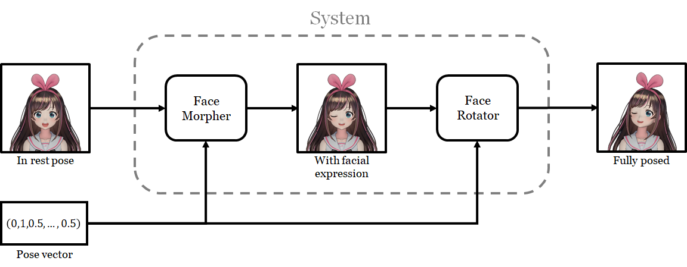 |
| Figure 2.1 An overview of my neural network system. |
{kind=link}
For this article, the face rotator is especially relevant because it is the network that I have to redesign in order to expand the system's capability. The network itself is made up of two subnetworks. The two-algorithm face rotator uses two image tranformation techniques to generate images of the character's rotated face, and the combiner merges the two generated images to create the final output.
| 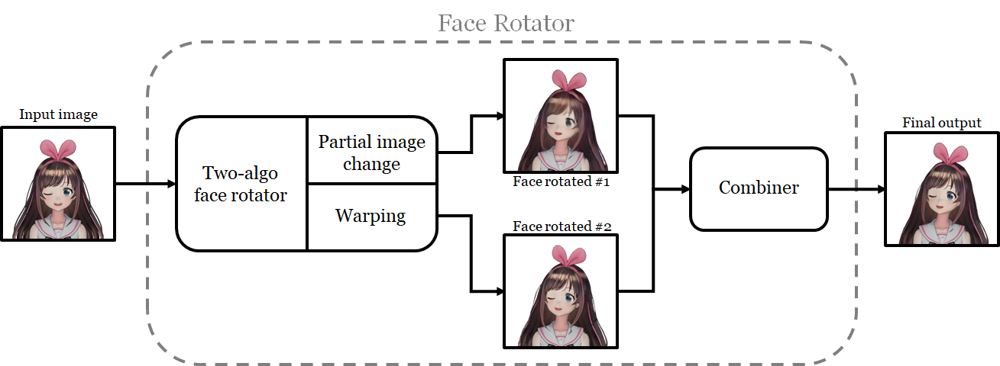 |
| Figure 2.2 The face rotator. |
{kind=link}
The two image tranformation techniques are:
- Partial image change. We generate an image that represents change to the input image and an alpha mask that tells where the change should be applied. The technique thus preserves some parts of the input image while altering others. It is thus suitable for the face rotation problem because we only need to change the pixels belonging to the head. The technique comes from Pumarola et al.'s ECCV 2018 paper [Pumarola et al. 2018].
- Warping. We generate an appearance flow: a map which indicates, for each pixel in the output image, from which pixel in the input image color should be copied. Applying it thus warps the input image by moving the pixels around. This technique comes from Zhou et al.'s ECCV 2016 paper [Zhou et al. 2016].
- Albert Pumarola, Antonio Agudo, Aleix M. Martinez, Alberto Sanfeliu, and Francesc Moreno-Noguer. GANimation: Anatomically-aware Facial Animation from a Single Image. ECCV 2018. [Project]
- Tinghui Zhou, Shubham Tulsiani, Weilun Sun, Jitendra Malik, and Alexei A. Efros. View Synthesis by Appearance Flow. ECCV 2016. [arXiv]
When the face is rotated by a few degrees, most changes to the input image can be thought of as moving existing pixels to new locations. Warping can thus handle these changes very well, and the generated image would be sharp because existing pixels would be faithfully reproduced. Nevertheless, warping cannot generate new pixels, which are needed when unseen parts of the head become visible after rotation. Partial image change, on the other hand, can generate new pixels from scratch, but they tend to be blurry. By combining both approaches [footnote], we can use pixels hallucinated by partial image change to fill areas that warping cannot handle, thus getting the best of both worlds.
- See details in Section 6.2 of the write-up of the 2019 project.
3 Moving the Body
In this large section, I discuss how I extended my 2021 system so that it can move the body as well. I will start by defining exactly the problem I would like to solve (Section 3.1). Then, I will give a brief overview of the whole system. In particular, I will discuss which networks from the previous projects I reused and which I created anew (Section 3.2). Next, I will elaborate on how I generated the datasets to train the new networks (Section 3.3). I will then describe the networks' architectures and training procedures (Section 3.4), and lastly I will evaluate the networks' performance (Section 3.5).
3.1 Problem Specification
As with the previous version of the system, the new version in this article takes as input an image of a character and a pose vector. The image is now of resolution $512 \times 512$ in order to fully show the upper body. The character should be standing approximately upright, and the head should be roughly contained in the $128 \times 128$ box in the middle of the top half of the image.
| 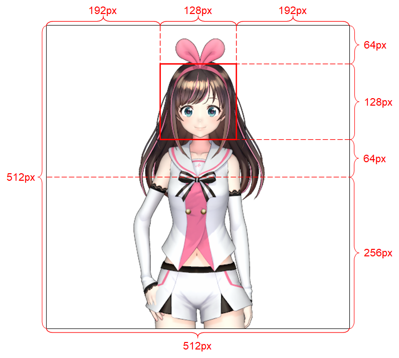 |
| Figure 3.1.1 A valid input to the new version of the system. The character is Kizuna AI (© Kizuna AI). |
{kind=link}
The character's eyes must be wide open, but the mouth can be either completely closed or wide open. However, while the character's head must be front facing in the old version, the new version relaxes this constraint. The head and the body can be rotated to by a few degrees. The arms can be posed rather freely, but they should generally be below and far from the face. Allowing these variations makes the system more versatile because it is hard to find images of anime characters in the wild whose face is perfectly front facing and whose body is perfectly upright.
| 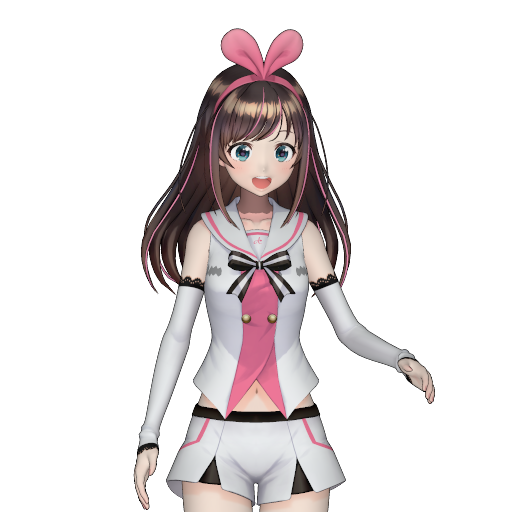 | 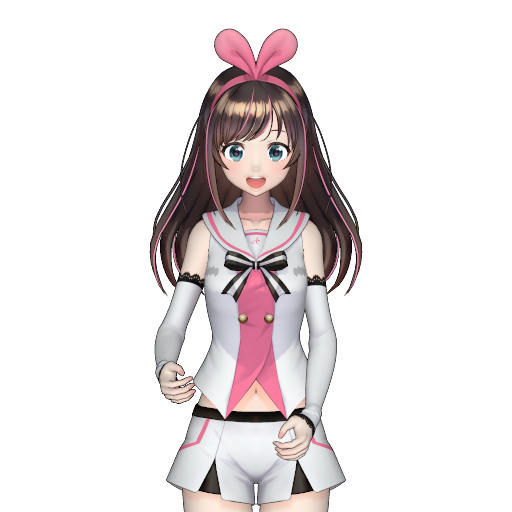 | 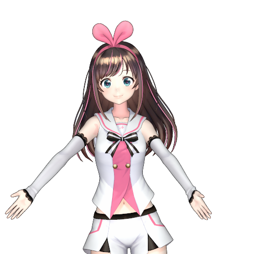 | 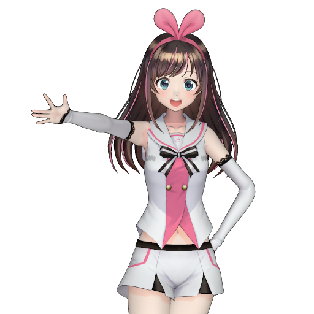 |
| 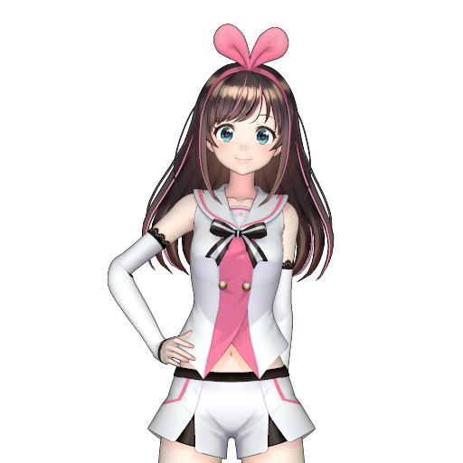 | 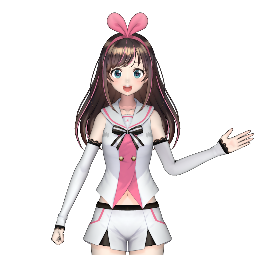 | 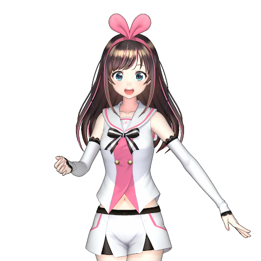 | 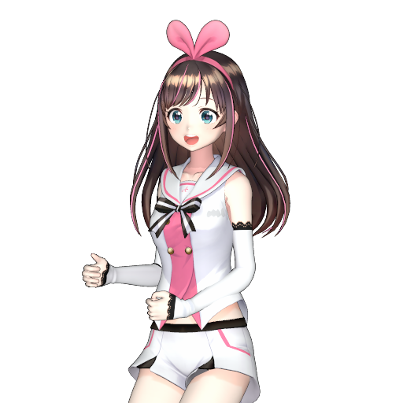 |
| Figure 3.1.2 Examples of valid input images to the system. | |||
{kind=link}
{kind=link}
{kind=link}
{kind=link}
{kind=link}
{kind=link}
{kind=link}
{kind=link}
The input image must have an alpha channel. Moreover, for every pixel that is not a part of the character, the RGBA value must be $(0,0,0,0)$.
The pose vector now has 45 dimensions, and you can see the semantics of each parameter in Appendix A. 42 parameters have mostly the same semantics as those in the last version of the system. The only changes from the old version are the ranges of the parameters for head rotation around the $y$- and $z$-axis. In the old version, these parameters correspond to rotation angles in the range $[-15^\circ, 15^\circ]$. In the new version, the range shrinks to $[-10^\circ, 10^\circ]$ for a reason that will momentarily become apparent.
There are three new parameters, and they control the body.
- One parameter controls the rotation of the hip around the $y$-axis (the one that points upward). Its value is in the range $[-1,1]$ and corresponds in the obvious way to rotating the hip by angles in the range $[-5^\circ,5^\circ]$.
- One parameter controls the rotation of the hip around the $z$-axis (the one that points to the front of the character). Its value is also in the range $[-1,1]$ and corresponds in the obvious way rotating the hip by angles in the range $[-5^\circ,5^\circ]$.
- The last parameter controls the "breathing motion" where the chest moves slightly up and down. Its value is in the range $[0,1]$. The value $0$ corresponds to the chest being at its lowest position (fully exhaled), and the value $1$ corresponds to the chest being raised to the highest possible position (fully inhaled).
With the above three parameters, it becomes possible to move a character's upper body like how typical VTubers move theirs.
Note that I previously mentioned that I reduced the range of the head rotation around the $y$-axis and the $z$-axis from $[-15^\circ, 15^\circ]$ to $[-10^\circ, 10^\circ]$. I did so because rotating the hip causes the face to move as well, and I would like to preserve the $[-15^\circ, 15^\circ]$ range in which the face can be oriented. That is, because the hip can be rotated by angles in the range $[-5^\circ, 5^\circ]$, I reduced the face's angle range to $[-10^\circ, 10^\circ]$ because $10^\circ + 5^\circ = 15^\circ$.
Lastly, let us recall the output's specification. After being given an image of a character and a pose vector, the system must produce a new image of the same character, posed according to the pose vector.
3.2 System Overview
Figure 3.2.1 gives an overview of the new version of the system. It is similar to the old one (Figure 2.1), but now it deals with the upper body instead of just only the face. It still has two steps, and the first step still modifies the character's facial expression. For this step, I reuse the face morpher network that is the centerpiece of the previous year's project. The second step must not only rotate both the face and the body but also make the character breath, so the old face rotator from 2019 cannot be used. The network for the second step is now called the body rotator, and it must be designed and trained anew.
| 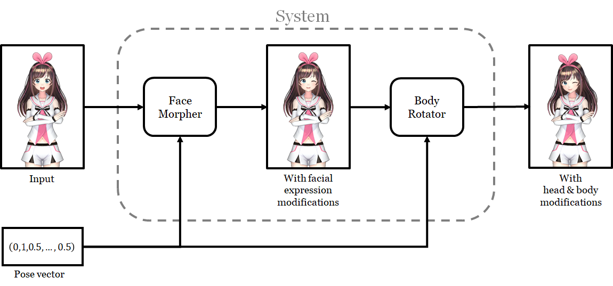 |
| Figure 3.2.1 An overview of the new version of the system. |
{kind=link}
3.3 Data
We must now prepare datasets to train the body rotator. Continuing the practice I adopted in previous projects, I created them by rendering 3D models created for the animation software MikuMikuDance, and I reused a collection of around 8,000 MMD models I manually downloaded and annotated. Details on how I created the collection can be found here and here.
A dataset's format must follow the specification of the body rotator's input and output. In particular, the input consists of two objects. One is a $512 \times 512$ image of a character whose facial expression has been modified by the face morpher. The other is the part of the pose vector that controls (1) the rotation of the face and body and (2) the breathing motion. This part has 6 dimensions: 3 for face rotation, 2 for body rotation, and 1 for the breathing motion. The output, of course, is another $512 \times 512$ image of the same character, but now its pose has been modified according to the $6$-dimensional pose vector.
3.3.1 Posing for the Input Image
One main difference between the body rotator and the face rotator from the 2021 project is the character's body pose in the input image. For the face rotator, the character must be in the "rest" pose. In other words, the face must be looking forward and must not be tilted or rotated sideways. Moreover, the body must be perfectly upright. The arms must stretch straight sideways and point diagonally downward. (See Figure 3.3.1.1.) On the other hand, as stated in Section 3.1, the new body rotator must be able to accept variations in the initial pose like in Figure 3.1.2.

|
| Figure 3.3.1.1 The MMD model of Kizuna AI in the rest pose. |
This requirement makes data generation harder. For the old version, I only have to render an MMD model without posing it because MMD modelers almost always create their models in the rest pose to begin with. On the contrary, the new version requires an MMD model to be posed twice. It must take a non-rest pose in the input image, and then that pose must be altered according to the pose vector in the output image.
One must then figure out what poses to use in the input images, and my answer is to use those shared by the MMD community. I downloaded pose data in VPD format, created specifically for MMD models from web sites such as Nico Nico and BowlRoll and ended up collecting 4,731 poses in total. However, a pose may not be usable for several reasons.
- It is not a standing pose.
- The face turns too much sideways, upward, or downward.
- After the model is posed, the face or a large part of it is not contained in the middle $128 \times 128$ box described in Section 3.1.
I created a tool that allowed me to manually classify whether a pose is usable or not through visual inspection. With it, I identified about 832 usable poses (a yield of 19.1%). You can see the tool in action in the video below.
One way to specify the pose in the input image is to uniformly sample a usable pose from the collection above. However, I felt that using just 832 poses was not diverse enough, so I augmented the sampled pose further. After sampling a pose from the collection, I sample a "rest pose" by sampling the angle the arms should make with the $y$-axis from the range $[12.5^\circ, 30^\circ]$ and rotating the model's arm accordingly. I then blended the pose from the collection with the rest pose, using a blending factor $\alpha$ sampled from the range $[0,1]$. This process is depicted in the figure below.
| 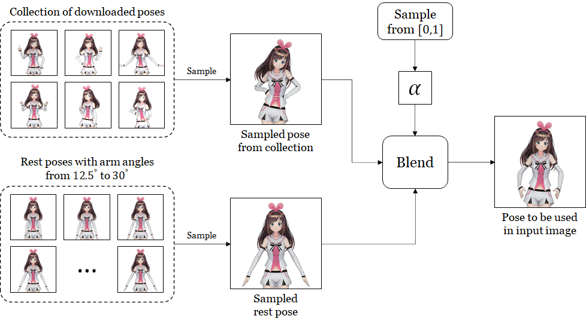 |
| Figure 3.3.1.2 The process to sample a pose to be used in the input image. |
{kind=link}
Note that a pose of an MMD model is a collection of two types of values.
- A scalar weight for each blendshape the model has.
- A quaternion to represent rotation at each bone in the model's skeleton.
Blending two poses together thus involves interpolating the above values. More specifically, we perform linear interpolation on the blendshape weights, and spherical linear interpolation (slerp) on the quaternions.
3.3.2 Semantics of the 6 Pose Parameters
In order to generate training examples, one must determine what each component of the pose vector means in terms of MMD models. For example, when the breathing parameter is, say, $0.75$, what bone(s) in an MMD model does one modify and what should the modification be? I shall now discuss the semantics of the 6 parameters in turn.
3.3.2.1 The Hip Rotation Parameters
Let us start with the one that is the easiest to describe: the hip $y$-rotation parameter. In this case, one must rotate two bones around the $y$-axis by the same angle. One bone is called "upper body" (上半身), and the other is called "lower body" (下半身). According to the specification in Section 3.1, the angle is $v \times 5^\circ$ where $v$ is the parameter value.
For the semantics of the hip $z$-rotation parameter, just replace the $y$-axis with the $z$-axis.
3.3.2.2 The Breathing Parameter
The semantics of the breathing parameter is more involved as most MMD models do not have bones or morphs for specifically controlling breathing. As a result, I have to define what breathing means on my own, and I chose to modify the translation parameters of a 5 bones in the chest area.
| 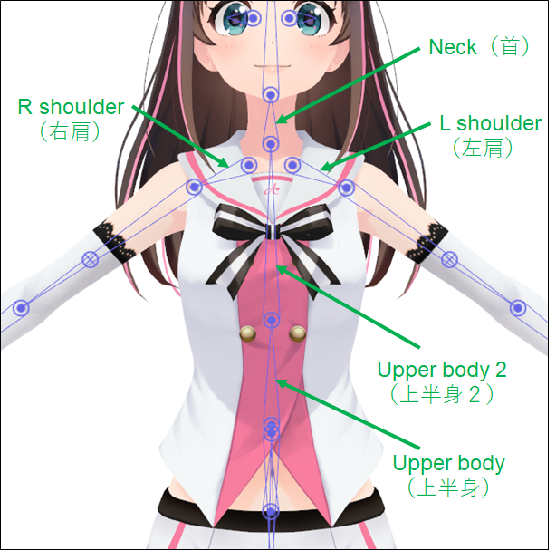 |
| Figure 3.3.2.2.1 Bones modified to enact the breathing motion. |
{kind=link}
When we inhale, our lungs expands, and it pushes our chest both outward and upward. To simulate this movement, I set the translation parameter of the "upper body" bone to the vector $(0,0,v\times D)$ to make the chest protrudes outward and that of the "upper body 2" bone to $(0, v \times D, 0)$ to make it extends upward. Here, $v$ is the breathing parameter value and $D$ is the maximum displacement, a per-model constant that we shall discuss later. The effect of the modification can be seen in the following video.
However, we can also see that it also has the side effect of making the head and the shoulders move diagonally back and forth. Nevertheless, when we breathe, our head and shoulders rarely move. To keep them stationary, I also set the translation parameters of three remaining bones (i.e., left shoulder, right shoulder, and neck) to $(0, -v \times D, -v \times D)$ to cancel the translations of the two upper body bones. The effect of the cancellation can be seen in the video below.
The maximum displacement $D$ is set to $1/64$ of the height of the character's head.
When the model is viewed from the front, we can see that the chest moves up and down while the head and the shoulders remain stationary. This movement gives the impression that the character is breathing as we wanted
3.3.2.3 The Head Rotation Parameters
There are three head rotation parameters:
- Rotation of the neck bone around the $z$-axis.
- Rotation of the head bone around the $x$-axis.
- Rotation of the head bone around the $y$-axis.
There are no changes to the bones and the axes above. However, I changed how the parameters affect the model's shape.
Typically, when a bone of an 3D model is rotated, bones that are children of that bone and vertices that these bones influence also move. For example, when one rotates the neck bone, vertices on the neck, the whole head, and also the whole hair mass would also rotate with the neck, as can be seen in the video below.
| Figure 3.3.2.3.1 The typical result of rotating the neck bone around the $z$-axis. Notice that the whole hair mass moves like a single rigid body, following the head. The character is Suou Patra (© HoneyStrap), and the 3D model was created by OTUKI. |
This behavior, however, makes it very hard for a neural network to animate characters with long hair. First, it must identify correctly which part of the input image is the hair and which part is the body and the arms that are in front of it. This is a hard segmentation problem that must be done 100% correctly. Otherwise, disturbing errors such as severed body parts or clothing might show up. Second, as the hair mass moves, parts that were occluded by the body can become visible, and the network must hallucinate these parts correctly. Note that these difficulties do not exist in the previous version of my system because it could only animate headshots. We cannot see long hair in the input to begin with!
| 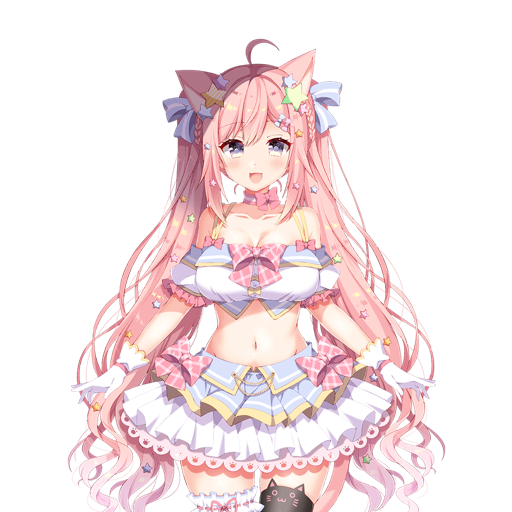 | |
| Figure 3.3.2.3.2 TTo generate the video on the right, I used a model to animate the image on the left, but it was trained on a dataset where the whole hair mass moves with the head like in Figure 3.3.2.3.1. In the bottom half of the video, we can see that the details of the hair strands are lost. Moreover, the model seemed to think that the character's hands were a part of the hair, so it cut the fingers off when the hair moved. The character is Enomiya Milk (© Noripro). | |
While it may be possible to solve the above problems with current machine learning techniques, I realized that it was much easier to avoid them and still generate plausible and beautiful animations. The difficulty in our case comes from long-range dependency: a small movement of the head leads to large movement elsewhere faraway. The situation becomes much easier if hair pixels far from the head were kept stationary.
I thus modified the skinning algorithm for MMD models so that the neck and the head bones can only influence vertices that are not too far below the vertical position of the neck. The new algorithm's effect can be seen in the following video.
| Figure 3.3.2.3.3 Hair movement after limiting the influence of the neck and head bones. We can see that the hair mass below the shoulders does not move at all, and this make the system's job much easier. |
To recap, the head rotation parameters still correspond to rotating the same bones around the same axes. However, the influence of the these bones is limited to vertices that are not too far below the neck so that head movement cannot cause large movement elsewhere. This greatly simplifies animating characters with very long hair, which are quite common in illustrations in the wild.
3.3.3 Augmenting Renderings with Simulated Neck Shadows
Character illustrations in the wild often depict shadows casted by the head on the neck. We can clearly see that the skin just below the chin is often much darker than the face.
| 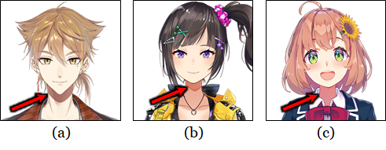 |
| Figure 3.3.3.1 Three drawn characters with neck shadows. The characters are Fushimi Gaku, Hayase Sou, and Honma Himawari. They are © ANYCOLOR, Inc. |
{kind=link}
However, in 3D models, the neck and face skin often have exactly the same tone. Thus, a neck shadow would be absent if a model is rendered without shadow mapping or other shadow-producing techniques. I chose not to implement such an algorithm because it would require much effort and would greatly complicate my data generation pipeline. As result, my previous datasets do not have neck shadows and are quite different from real-world data.
When a character turns its face upward, the area of the neck previously occluded by the chin would become visible, and the network must hallucinate the pixels there. Ideally, if the neck shadow is present, the hallucinated pixels should have the same color. However, training a neural network with my previous datasets can lead to a problem where these pixels would be brighter than the surrounding shadow because it is fine to use the face skin's color during training. The figure below shows two such failure cases.
|
||||||
| Figure 3.3.3.2 Failure cases in which hallucinated neck pixels are brighter than the surrounding neck shadows. The characters are Suzuhara Lulu (top) and Ex Albio (bottom). They are © ANYCOLOR, Inc. |
To alleviate the problem without having to implement a full-blown shadow algorithm, I simulated neck shadows by simply rendering the neck under a different lighting configuration than the rest of the body. Like the previous versions of the project, two light sources are present in the scene. As such, when implementing the fragment shader of my renderer, I only had to condition their intensities on whether the fragment being shaded belongs to the neck or not. The result of this rendering method can be seen in the figure below.
|
||||
| Figure 3.3.3.3 An MMD model rendered (a) conventionally and (b) with simulated neck shadow. The character is Yamakaze from the game Kantai Collection. The 3D model was created by cham. |
When generating training examples, we must then provide two sets of lighting intensities so that one can be used to render the body, and the other can be used to render the neck. In the dataset I generated, I sampled the intensities so that the following properties hold:
- For 25% of the dataset, the neck are shaded under darker lights than the rest of the body.
- For 25% of the dataset, the neck and the body are shaded under the same lighting configuration.
- For 50% of the dataset, the lighting configurations used to render the neck and the body are sampled independently. (So, in some of these cases, the neck might appear brighter than the rest of the body.)
The sampling method above, I believe, would allow the network to deal with the variety of character illustrations in the wild.
3.3.4 Generating a Training Example
A dataset is a collection of training examples, and a training example in our case is a triple $(I_{\mathrm{in}}, \ve{p}, I_{\mathrm{out}})$ where:
- $I_{\mrm{in}}$ is a $512 \times 512$ input image depicting a character in a standing pose.
- $\ve{p}$ is the 6-dimensional pose vector.
- $I_{\mrm{out}}$ is a $512 \times 512$ output image, which should depict the character in the input image whose pose has been altered by the pose vector.
|
||||||
| Figure 3.3.4.1 A training example. |
{kind=link}
{kind=link}
The process of generating the above data items is rather involved. It requires sampling an MMD model, an input pose as in Section 3.3.1, a 6-dimensional pose vector $\ve{p}$, and two sets of light intensities as in Section 3.3.3. The input pose and $\ve{p}$ must then be combined using the specification in Section 3.3.2 to obtain the pose to be used in the output image. The model, the poses, and the lighting configurations are then combined to render $I_\mrm{in}$ and $I_\mrm{out}$ using the rendering algorithm in Section 3.3.3. For completeness, I lay out the complete generation algorithm in the listing below. The reader, however, is advised to skip the description unless they are interested in reproducing it.
| Listing 3.3.4.2 Algorithm for generating a training example |
|---|
|
{kind=link}
3.3.5 The Datasets
I followed the same dataset generation process as the previous versions of the projects. Before data generation, I divided the models I downloaded into three groups according to their source materials (i.e., what animes/mangas/games they came from) so that no two groups had models of the same character. I then used the three groups to generate the training, validation, and test datasets. The number of training examples and the number of models used to generate them are given in the table below.
| Training set | Validation set | Test set | |
| # models used | 7,827 | 79 | 68 |
| # examples | 500,000 | 10,000 | 10,000 |
3.4 Networks
I have just described the datasets for training the body rotator. In this section, I turn to the network's architecture and training process.
3.4.1 Overall Design
In my first attempt to design the body rotator, I reused the face rotator's architecture. There would be two subnetworks. The first one would produce two outputs, and the second one would then combine them into the final output image.
| Figure 3.4.1.1 The face rotator's architecture. (This figure is the same as Figure 2.2. It is reproduced here for the reader's convenience.) |
The difficulty, however, is the input's size: a $512 \times 512$ image is 4 times larger than a $256 \times 256$ one. The networks above were designed to work with $256 \times 256$ images. Hence, if I use them without modification, they would become 4 times slower, which is clearly not fast enough for interactive applications. The 2021 system could only achieve between 10-20 fps even on a Titan RTX graphics card, and I do not want the new system to be much slower.
My strategy, then, is to scale the input image down to $256 \times 256$ and then perform body rotation on it first. For this step, I can use a subnetwork whose architecture is similar to those in my previous projects without any performance penalty. I call this network the half-resolution rotator due to the fact that it has the same functionality as the whole body rotator but operates on half-resolution images. Its output, of course, are half-sized and so not immediately usable. Scaling the outputs up by a factor of 2 would provide images with the right resolution, but these images are "coarse" in the sense that they lack high-frequency details. I thus add another subnetwork called the editor, whose task is to combine the scaled-up outputs into one image and edit it to improve quality.
Note that the editor is the only network that operates on full-resolution images, but it can afford to have lower capacity per input pixel because its task is much easier than that of the half-resolution rotator. We will see later that this design keeps the body rotator speedy enough for real-time applications despite the fact the input is now 4 times larger.
The two networks do not follow the old design exactly. Like the two-algorithm face rotator, the half-resolution rotator still uses two image transformation techniques to produce output images, but they are not the same as the old ones.
- Partial image change is replaced by a new technique, direct generation (which will be discussed later).
- Warping is still used, but the unit responsible for it is modified to also output the appearance flow offset that is used generate the warped image.
The editor is similar to the combiner. However, instead of taking in outputs from both image tranformation techniques of the half-resolution rotator, it now only takes those from the warping one. The image created by direction generation is always discarded.
| 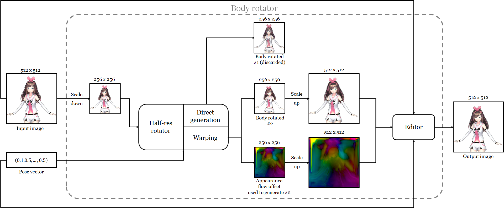 |
| Figure 3.4.1.2 The overall architecture of the body rotator. |
{kind=link}
While direct generation seems wasteful and superfluous, it serves as an auxiliary task at training time, and I found that it improved the whole pipeline's performance. This counterintuitive design is a result of evaluating many design alternatives and choosing the best one. (More on this later in Section 3.5.)
I will now discuss each of the subnetworks in more details.
3.4.2 The Half-Resolution Rotator
The half-resolution rotator's architecture is derived from that of the two-algorithm face rotator from my 2019 project. So, it is built with components that I previously used. These include the image features (alpha mask, image change, and appearance flow offset), the image transformation units (partial image change unit, combining unit, and warping unit), and various units such as $\mrm{Conv3}$, $\mrm{Conv7}$, $\mrm{ConvDown}$, $\mrm{Tanh}$, and so on. I refer the reader to the previous write-up for details.
| 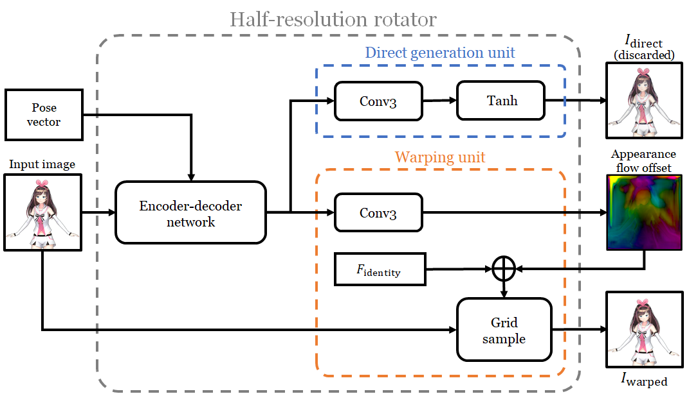 |
| Figure 3.4.2.1 An overview of the half-resolution rotator's architecture. |
{kind=link}
From the above figure, the half-resolution rotator has an encoder-decoder main body, which takes in a $256 \times 256$ input image and a pose vector and then produces a feature tensor. It then employs two image transformation units on the result to generate the outputs.
- The first is the new direct generation unit. It simply creates an output image from a feature tensor by passing it through a $3 \times 3$ convolution ($\mrm{Conv3}$) and then a hyperbolic tangent activation function. One can think of the unit as a simplified version of the partial image change unit where no alpha mask is generated, and no blending is performed. I shall refer to its output as $I_\mrm{direct}$.
| 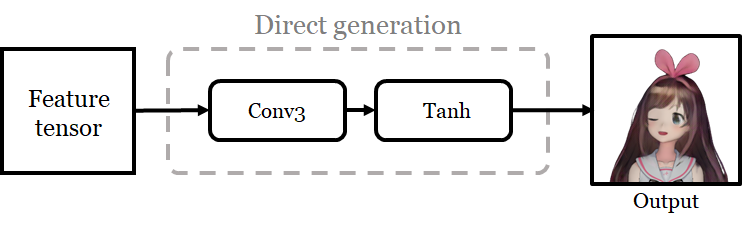 |
| Figure 3.4.2.2 The direct generation unit. |
{kind=link}
- The second is a warping unit, which produces a warped image and the appearance flow offset that is used to generate it. Let us denote the warped image by $I_\mrm{warped}$.
The outputs of these units are treated as the outputs of the half-resolution rotator.
Recall that, in the two-algorithm face rotator of the 2019 project, the partial image change unit is used because, in the 2019 problem specification, the body does not move at all, so the network only has to change pixels belonging to the head. However, for the current problem specification, if any of the parameters that control the hip rotation is not zero, then every pixel would change. As a result, it becomes more economical to generate all output pixels directly, and so I replaced partial image change with direct generation.
The specification of the encoder-decoder network is given the the table below.
|
||||||||||||||||||||||||||||||||
| Table 3.4.2.3 Specification of the encoder-decoder network that is the main body of the half-resolution rotator. Note that $D_3$ is the feature vector that is fed to the image tranformation units in order to generate the final outputs. |
The encoder-decoder network above is an upgraded version of the one used in my 2021 project. Differences from the old design include:
- Instead of using the linear rectifier unit (ReLU) as the activation function, I now use the leaky ReLU with slope $0.1$ instead.
- In the upscaling portion of the encoder-decoder, I use nearest-neighbor upscaling by a factor of 2 followed by a $\mrm{Conv3}$ instead of a transposed convolution unit. This is done to combat checkerboard artifacts in the outputs [Odena et al. 2016].
-
Augustus Odena, Vincent Dumoulin, and Chris Olah. Deconvolution and Checkerboard Artifacts. Distill. 2016. [WWW]
The units used to build the network are largely the same, but the semantics of some have slightly changed, and I also introduced a number of new ones.
- $\mrm{Concat}(\cdot, \cdot)$ concatenates two tensors in the first dimension.
- $\mrm{LeakyReLU}(\cdot)$ applies the leaky rectified linear unit activation function to each of the input tensor's element. The slope of the negative portion is $0.1$.
- $\mrm{ResNetBlock}(\cdot)$ still denotes a residual block. However, the activation function used is $\mrm{LeakyReLU}$ instead of $\mrm{ReLU}$. \begin{align*} \mathrm{ResNetBlock}(X) = X + \mathrm{InstNorm}(\mathrm{Conv3}(\mathrm{LeakyReLU}(\mathrm{InstNorm}(\mathrm{Conv3}(X))))). \end{align*}
- $\mrm{UpsampleNn}(\cdot)$ upsamples the argument tensor by a factor of $2$ with the nearest neighbor algorithm. It corresponds to PyTorch's Upsample unit with the nearest mode.
The half-resolution rotator is about 128 MB in size.
Training procedure. I trained the half-resolution rotator using a process similar to that of the two-algorithm face rotator. Training is divided into two phases. In the first phase, the loss function was the L1-norms of the differences between the two generated images and the direct image. \begin{align*} \mcal{L}_{\mrm{HRR},1} = E_{(I_\mrm{in}, \ve{p}, I_{\mrm{out}}) \sim p_{\mrm{data}}}\Big[ \| I_\mrm{warped} - I_\mrm{out} \|_1 + \| I_\mrm{direct} - I_\mrm{out} \|_1 \Big] \end{align*} In the second phase, I added a perceptual feature reconstruction loss [Johnson et al. 2016] on $I_\mrm{direct}$ and adjusted the weights of existing terms. \begin{align*} \mcal{L}_{\mrm{HRR},2} &= E_{(I_\mrm{in}, \ve{p}, I_{\mrm{out}}) \sim p_{\mrm{data}}}\bigg[ 20 \| I_\mrm{warped} - I_\mrm{out} \|_1 + \| I_\mrm{direct} - I_\mrm{out} \|_1 \\ &\qquad + \frac{4 \times 256 \times 256}{5}\Phi(I_\mrm{out}, I_\mrm{direct}) \bigg]. \end{align*} Here, \begin{align*} \Phi(I_1, I_2) = \sum_{i=1}^3 \lambda_i \big( \| \phi_i(I^{rgb}_1) - \phi_i(I^{rgb}_2) \|_1 + \| \phi_i(I^{aaa}_1) - \phi_i(I^{aaa}_2) \|_1 \big) \end{align*} where
- $\phi_1(\cdot)$, $\phi_2(\cdot)$, and $\phi_3(\cdot)$ denote the feature tensors outputted by the relu1_2, relu2_2, and relu3_3 layers of the VGG16 network [Simonyan et al. 2015], respectively;
- $\lambda_i = (C_i H_i W_i)^{-1}$ where $C_i$, $H_i$, and $W_i$ are the number of channels, the height, and the width of $\phi_i(\cdot)$; and
- for any RGBA image $I$, we let $I^{rgb}$ denote the same image without the alpha channel, and $I^{aaa}$ a 3-channel image formed by repeating $I$'s alpha channel three times.
The reader may notice the imbalance between the weights. The L1 losses, $20\| I_\mrm{warped} - I_\mrm{out} \|_1$ and $\| I_\mrm{direct} - I_\mrm{out} \|_1$, have small weights, but the weight of the perceptual loss, $\frac{4 \times 256 \times 256}{5} \Phi(I_\mrm{out}, I_\mrm{direct})$, is much larger. The reason for this imbalance is that $\Phi(I_\mrm{out}, I_\mrm{direct})$ is a sum of L1-norms that have been normalized by tensor sizes, but the other two losses are "unnormalized" L1-norms of $4 \times 512 \times 512$ tensors. The number $4 \times 256 \times 256$ scales $\Phi(I_\mrm{out}, I_\mrm{direct})$ up so that each of its term becomes an unnormalized $L1$-norm of a $4 \times 256 \times 256$ tensor. This puts the perceptual loss on roughly the same order of magnitude as the two L1 losses.
I trained the network with the Adam algorithm, setting $\beta_1 = 0.5$ and $\beta_2 = 0.999$. The learning rate was $10^{-4}$ for both phases, and the batch size was 8. The first phase lasted 1 epoch (500,000 examples shown), and the second phase lasted 12 epochs (6,000,000 examples shown).
3.4.3 The Editor
Recall from Figure 3.4.1.2 that the outputs of the half-resolution rotator are scaled up by a factor of 2. Then, they are fed to the editor along with the original $512 \times 512$ input image and the pose vector. The editor's job, then, is to produce an output image from these data.
Unlike the half-resolution rotator, the editor's main body is a U-Net [Ronneberger et al. 2015] instead of an encoder-decoder. I made this choice because of the folk wisdom that U-Nets are good for tasks where the input and output images are aligned pixel-to-pixel. Here, I assume that the half-resolution rotator should have moved the pixels to roughly the right locations, and so the editor's output would align pixel-to-pixel with the half-resolution rotator's outputs.
After being fed the all the inputs, the main body produces a feature tensor, which is then fed to a number of image processing steps, leading to the final output. The steps are:
- Warping the input image. From the feature tensor, a new appearance flow offset is created. It is then added to the input appearance flow offset, and the result is then used to warp the original $512 \times 512$ input image.
- Partially change the warped image. We simply apply a partial image change to the warped image generated in the last step. The resulting image is treated as the output of the editor. Let us denote it by $I_\mrm{final}$.
In other words, the editor further modifies the appearance flow offset created by the half-resolution rotator. Ideally, it should add high-frequency details that the rotator could not generate. The editor then "retouch" the the warped image generated by the improved appearance flow offset through partial image changes. The whole process is summarized in the Figure below.
| Figure 3.4.3.1 An overview of the editor's architecture. |
{kind=link}
The Specification of the U-Net network is given in the table below.
|
||||||||||||||||||||||||||||||||||||||||||
| Table 3.4.3.2 Specification of the U-Net network that is the main body of the editor. $D_6$ is the feature vector that the U-Net outputs. |
Let us note that the U-Net has lower capacity per input pixel than the encoder-decoder of the half-resolution rotator (Table 3.4.2.3). This can be seen from the number of channels of $B_1$, which is the first feature tensor both networks compute from the input. For the encoder-decoder, each pixel is allocated 64 channels, but the number is 32 for the U-Net.
Recall that the time complexity of a convolution on a $C \times H \times W$ tensor is $O(C^2HW)$. Hence, halving the number of channels speeds up convolution by a factor of 4, and doubling the image size (i.e., $H \rightarrow 2H$ and $W \rightarrow 2W$) also slows it down by a factor of 4. Because the U-Net operates on tensors that are 2 times larger in height and width but have 2 times fewer channels, its convolutions thus have the same time complexity as those in the encoder-decoder network because the aforementioned changes cancel each other out. As a result, we can say that the U-Net's time complexity is of the same order of magnitude as that of the half-resolution rotator (modulo, of course, the more complex calculation when scaling feature tensors up after the bottleneck part). Capacity reduction thus keeps the editor fast despite the fact it operates on images that have 4 times more pixels.
The editor is about 33 MB in size, which is about one forth the size of the half-resolution rotator. This is because a convolution unit that operates on a $C \times H \times W$ tensor requires $O(C^2)$ space to store its parameters. As a result, halving the number of channels reduces size by a factor of 4.
Training procedure. I used a loss function with 4 terms. \begin{align*} \mathcal{L}_{\mrm{editor}} = E_{(I_\mrm{in},\ve{p},I_\mrm{out}) \sim p_\mrm{data}} \Big[ \lambda_{\mrm{L1}} \mathcal{L}_{\mrm{L1}} + \lambda_{\mrm{percept}} \mathcal{L}_{\mrm{percept}} + \lambda_{\mrm{L1}}^{\mrm{neck}} \mathcal{L}_{\mrm{L1}}^{\mrm{neck}} + \lambda_{\mrm{percept}}^{\mrm{neck}} \mathcal{L}_{\mrm{percept}}^{\mrm{neck}} \Big]. \end{align*}
Here, $\mcal{L}_{\mrm{L1}}$ is the L1 difference between the groundtruth image and the final output. \begin{align*} \mcal{L}_{\mrm{L1}} = \| I_\mrm{out} - I_\mrm{final} \|_1. \end{align*}
$\mcal{L}_{\mrm{percept}}$ is the perceptual feature reconstruction loss between $I_\mrm{out}$ and $I_\mrm{final}$. I did not evaluate the loss on the whole $512 \times 512$ images because I found it to be too slow. Instead, I divided the images into 4 quadrants of size $256 \times 256$ and evaluate \begin{align*} \mcal{L}_{\mrm{percept}} = \frac{1}{4}\Big[ \Phi(I_\mrm{out}^{\mrm{Q1}}, I_\mrm{final}^{\mrm{Q1}}) + \Phi(I_\mrm{out}^{\mrm{Q2}}, I_\mrm{final}^{\mrm{Q2}}) + \Phi(I_\mrm{out}^{\mrm{Q3}}, I_\mrm{final}^{\mrm{Q3}}) + \Phi(I_\mrm{out}^{\mrm{Q4}}, I_\mrm{final}^{\mrm{Q4}}) \Big] \end{align*} where $I^{\mrm{Q1}}, I^{\mrm{Q2}}, I^{\mrm{Q3}}, I^{\mrm{Q4}}$ denote the 4 quadrants of image $I$. To speed up the computation of the above expression, I estimated it by uniformly sampling a quadrant and only evaluating the loss for that quadrant.
The $\mathcal{L}_{\mrm{L1}}^{\mrm{neck}}$ and $\mathcal{L}_{\mrm{percept}}^{\mrm{neck}}$ terms were added to alleviate the neck color problem that I encountered in Figure 3.3.3.2. They are the same as $\mcal{L}_{\mrm{L1}}$ and $\mcal{L}_{\mrm{percept}}$ except that they operate on the $64 \times 64$ subimage around the neck of the character.
| 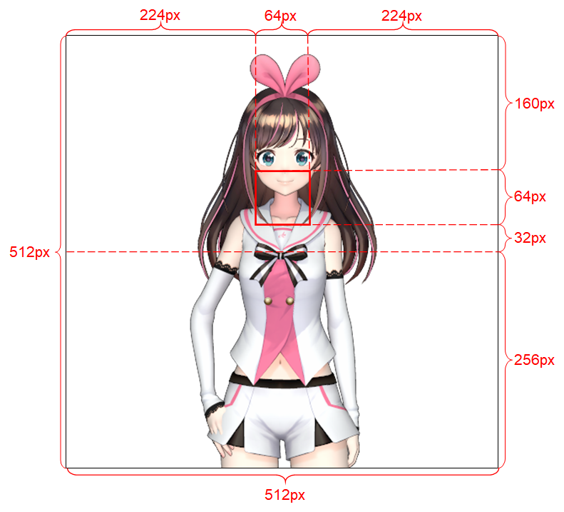 |
| Figure 3.4.3.3 The neck subimage that is used to evaluate $\mathcal{L}_{\mrm{L1}}^{\mrm{neck}}$ and $\mathcal{L}_{\mrm{percept}}^{\mrm{neck}}$. |
{kind=link}
Let us denote the neck subimage of $I$ by $I^\mrm{neck}$. The two neck loss terms are given by: \begin{align*} \mathcal{L}_{\mrm{L1}}^{\mrm{neck}} &= \big\| I_\mrm{out}^{\mrm{neck}} - I_\mrm{final}^{\mrm{neck}} \big\|_1, \\ \mathcal{L}_{\mrm{percept}}^{\mrm{neck}} &= \Phi( I_\mrm{out}^{\mrm{neck}}, I_\mrm{final}^{\mrm{neck}}). \end{align*} Because $I_\mrm{out}^{\mrm{neck}}$ and $I_\mrm{final}^{\mrm{neck}}$ are only $64 \times 64$ in resolution, directly evaluating the perceptual feature reconstruction loss on them was fast enough that I did not have to split them into quadrants like what I did for $\mathcal{L}_{\mrm{percept}}$.
The coefficients of the terms were \begin{align*} \lambda_{\mrm{L1}} &= \frac{1}{4}, & \lambda_{\mrm{percept}} &= \frac{4 \times 256 \times 256}{5}, \\ \lambda_{\mrm{L1}}^{\mrm{neck}} &= 16, & \lambda_{\mrm{percept}}^{\mrm{neck}} &= \frac{4 \times 256 \times 256}{5}. \end{align*}
Training the editor requires the half-resolution rotator because we have to use it to generate two of the editor's inputs. However, I froze its parameters so that only the editor's parameters were updated during training. Again, I used the Adam algorithm with $\beta_1 = 0.5$, $\beta_2 = 0.999$, learning of $10^{-4}$, and batch size of 8. Training lasted for 6 epochs (3,000,000 examples shown).
3.5 Results
3.5.1 Comparison Against Other Design Variations
The design of the body rotator I presented the last section is rather counterintuitive: the half-resolution rotator has an output that is always discarded. I came to this design by picking the best one out of many variations.
I evaluated 2 designs for the half-resolution rotator and 6 designs for the editor. I also considered a design where a standalone network performs the whole body rotation task. Because some half-resolution rotator designs are not compatible with certain editor designs, there were 10 valid variations in total.
Half-resolution rotator designs. Of course, one the of the designs is the one I presented in Section 3.4.2. The other design is a variation of that design in which the direct generation branch is removed. Let us refer to the simpler design as "Rotator A," and the design in Section 3.4.2 as "Rotator B."
| 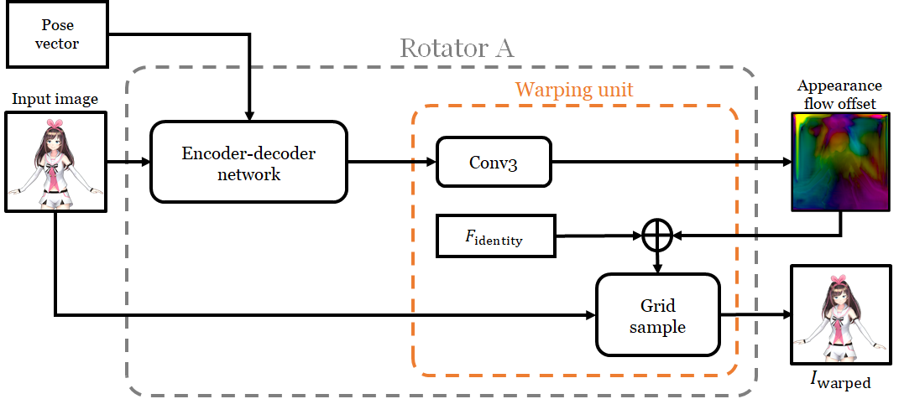 | 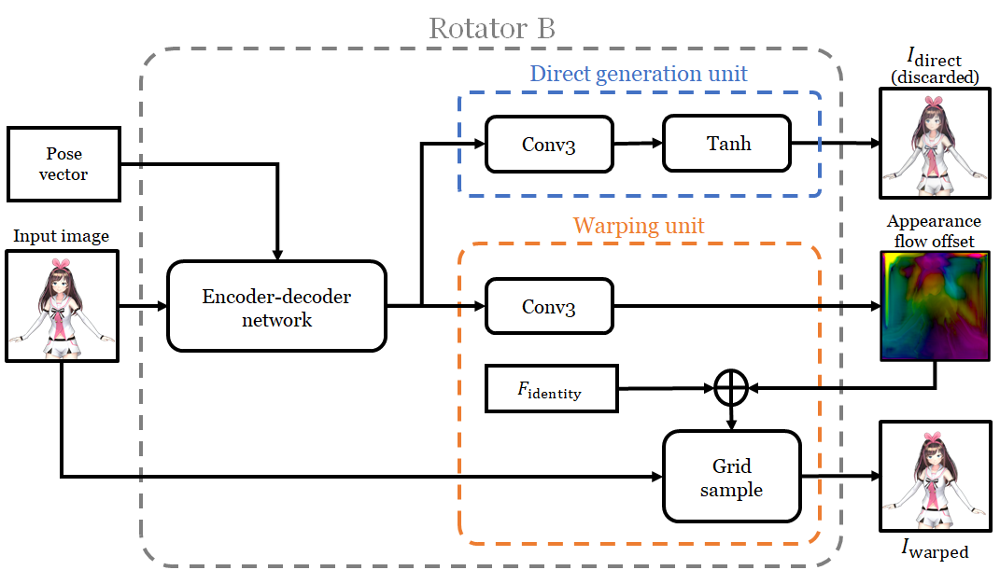 |
| Rotator A | Rotator B |
{kind=link}
{kind=link}
Rotator B was trained with the process described in Section 3.4.2. Rotator A's process was similar because the only changes were the loss functions. The first phase's loss function was \begin{align*} \mcal{L}_{\mrm{RA},1} = E_{(I_\mrm{in},\ve{p},I_\mrm{out}) \sim p_{\mrm{data}}}\Big[ \| I_\mrm{out} - I_{\mrm{warped}} \| \Big], \end{align*} and the second phase's loss function was \begin{align*} \mcal{L}_{\mrm{RA},2} = E_{(I_\mrm{in},\ve{p},I_\mrm{out}) \sim p_{\mrm{data}}}\bigg[ 20 \| I_\mrm{out} - I_{\mrm{warped}} \|_1 + \frac{4 \times 256 \times 256}{5} \Phi(I_\mrm{out}, I_{\mrm{warped}}) \bigg]. \end{align*}
Editor designs. I considered 6 designs for the editor. All of them has the same U-Net (Table 3.4.3.2) as their main bodies, but they differ in what inputs they take in and how they generate the final output image.
As for the inputs, there are 5 data items that the editor can take in.
- $I_\mrm{in}$, the original input image.
- $\ve{p}$, the pose vector.
- $I_\mrm{warped}$, the (scaled-up) warped image generated by the half-resolution rotator.
- $\Delta F$, the (scaled-up) appearance flow offset generated by the half-resolution rotator.
- $I_\mrm{direct}$, the (scaled-up) direct image generated by the half-resolution rotator.
So, an editor's inputs must form a subset of $\{ I_\mrm{in}, \ve{p}, I_\mrm{warped}, I_\mrm{direct}, \Delta F \}$. I explored four subsets.
- $\{ I_\mrm{in}, \ve{p}, I_\mrm{warped} \} $
- $\{ I_\mrm{in}, \ve{p}, I_\mrm{warped}, \Delta F \} $
- $\{ I_\mrm{in}, \ve{p}, I_\mrm{warped}, I_\mrm{direct} \} $
- $\{ I_\mrm{in}, \ve{p}, I_\mrm{warped}, \Delta F, I_\mrm{direct}\} $
In other words, all editors must take in $I_\mrm{in}$, $\ve{p}$, and $I_\mrm{warped}$, but $\Delta F$ and $I_\mrm{direct}$ are optional.
As for ways to generate the final output image $I_\mrm{final}$, I explored three approaches.
- Approach $\ves{\alpha}$: Generate $I_\mrm{final}$ directly through a direct generation unit.
- Approach $\ves{\beta}$: Perform a partial image change on $I_\mrm{warped}$
- Approach $\ves{\gamma}$: Modify $\Delta F$ and use the result to warp $I_\mrm{in}$. Then, perform a partial image change on the new warped image.
Note that Approach $\gamma$ requires $\Delta F$, but the other two approaches do not need it. Based on this observation, there are 6 possible designs as listed in the table and figure below.
| Name | Inputs | How to Generate $I_\mrm{final}$ |
|---|---|---|
| Editor U | $\{ I_\mrm{in}, \ve{p}, I_\mrm{warped} \}$ | Approach $\alpha$ |
| Editor V | $\{ I_\mrm{in}, \ve{p}, I_\mrm{warped}, I_\mrm{direct} \}$ | Approach $\alpha$ |
| Editor W | $\{ I_\mrm{in}, \ve{p}, I_\mrm{warped} \}$ | Approach $\beta$ |
| Editor X | $\{ I_\mrm{in}, \ve{p}, I_\mrm{warped}, I_\mrm{direct} \}$ | Approach $\beta$ |
| Editor Y | $\{ I_\mrm{in}, \ve{p}, I_\mrm{warped}, \Delta F \} $ | Approach $\gamma$ |
| Editor Z | $\{ I_\mrm{in}, \ve{p}, I_\mrm{warped}, \Delta F, I_\mrm{direct}\} $ | Approach $\gamma$ |
| 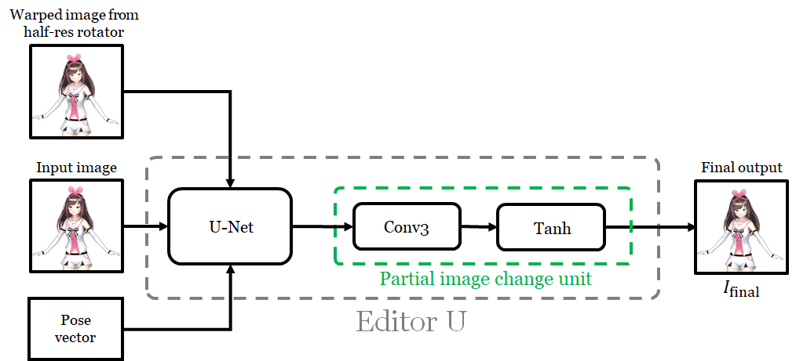 | 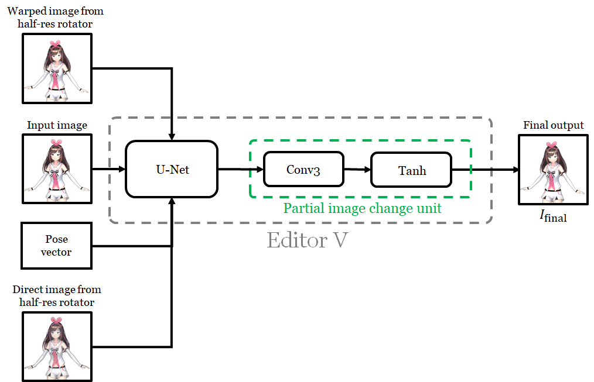 |
| Editor U | Editor V |
| 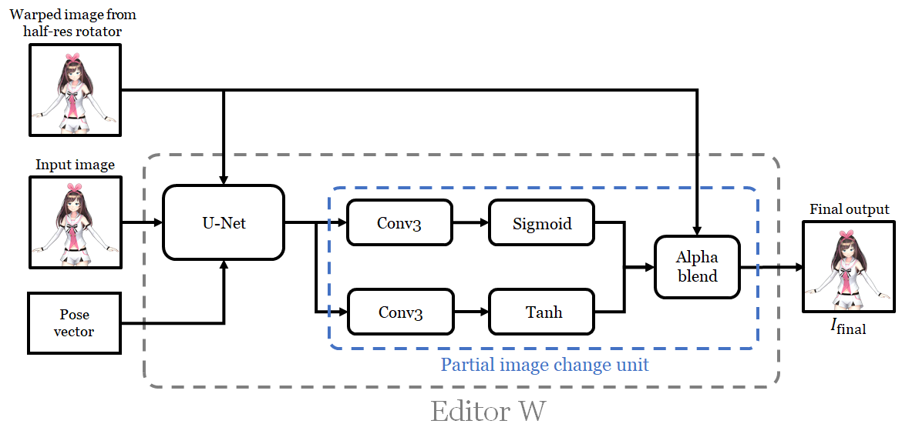 | 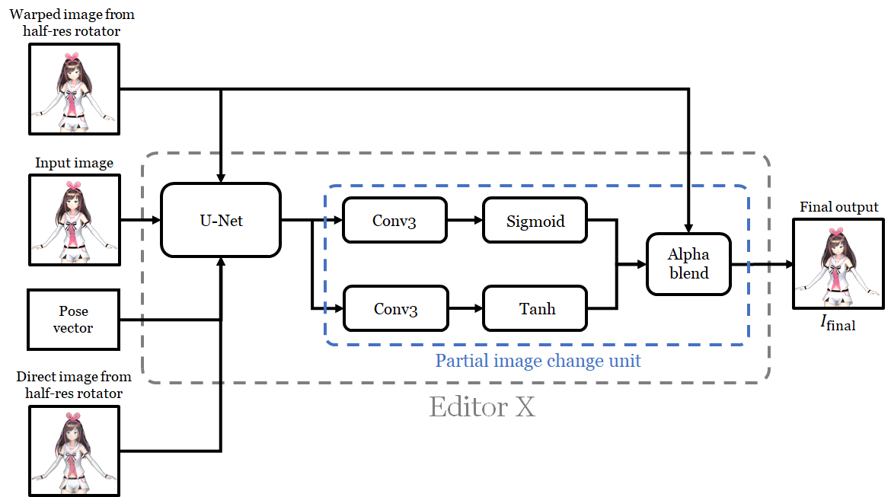 |
| Editor W | Editor X |
| 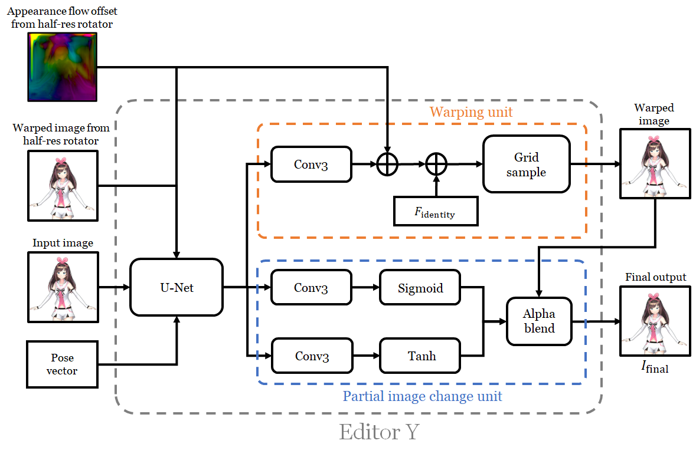 | 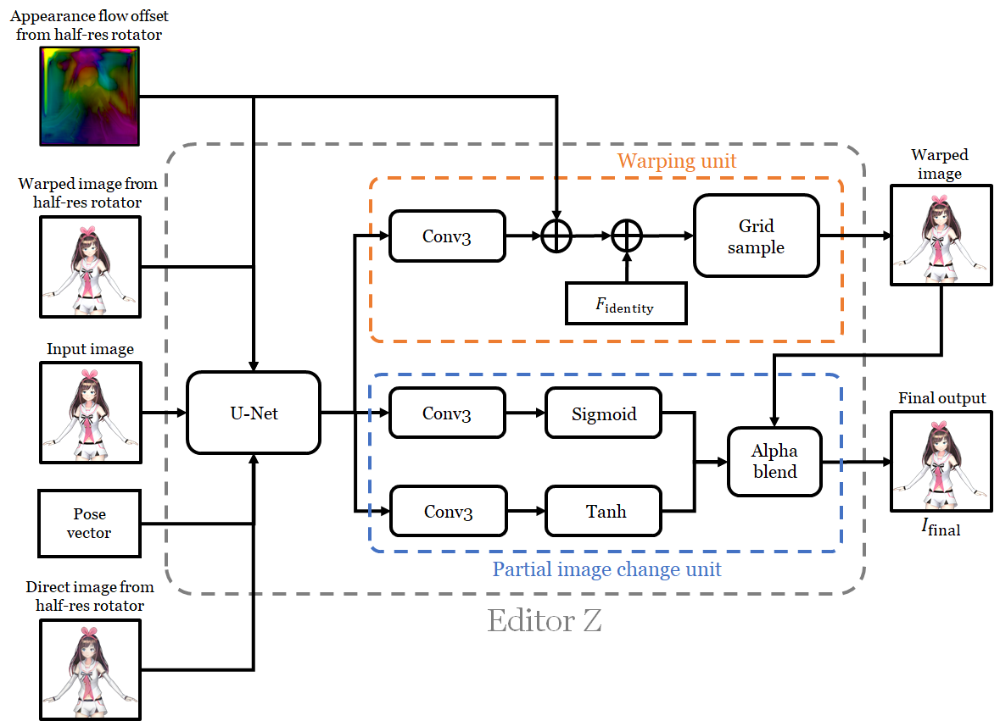 |
| Editor Y | Editor Z |
{kind=link}
{kind=link}
{kind=link}
{kind=link}
{kind=link}
{kind=link}
Note that Editor Y is the one previously presented in Section 3.4.3.
To form a complete body rotator, we must connect a half-resolution rotator with an editor. We can see that Rotator A cannot work with any editor that takes $I_\mrm{direct}$ as an input, but Rotator B is compatible with all editors. As a result, there are $3 + 6 = 9$ possible designs.
| Editor U | Editor V | Editor W | Editor X | Editor Y | Editor Z | |
|---|---|---|---|---|---|---|
| Rotator A | 〇 | ✕ | 〇 | ✕ | 〇 | ✕ |
| Rotator B | 〇 | 〇 | 〇 | 〇 | 〇 | 〇 |
All editors were trained with the process in Section 3.4.3. Note that I must train two copies of each of Editor U, W, and Y because they all belong to two different body rotator designs. One copy must be trained with Rotator A and the other with Rotator B.
Single network design. I also evaluated an architecture where a single network is responsible for performing the body rotation task end-to-end. The network has an encoder-decoder main body whose construction is similar to that in Table 3.4.2.3. However, because the input is $512 \times 512$ rather than $256 \times 256$, the encoder-decoder features one extra downsampling step in the yellow section and one extra upsampling step in the red section. The first feature tensor created from the input is of size $32 \times 512 \times 512$ instead of $64 \times 256 \times 256$. The feature tensor outputted by the encoder-decoder is used to warp the input image and then partially change it. The network's architecture is depicted below.
| 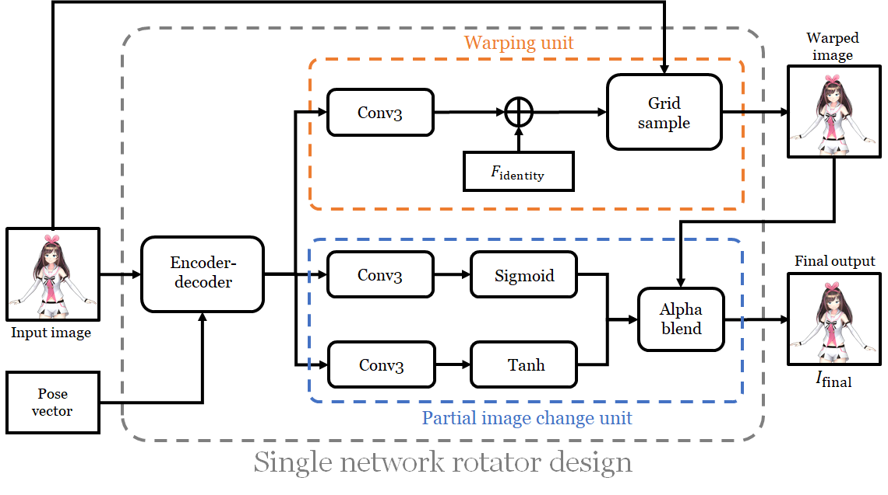 |
| Figure 3.5.1.4 The single network rotator design. |
{kind=link}
The network was trained in two phases. In the first phase, the loss function was \begin{align*} \mcal{L}_{\mrm{SNR},1} = E_{I_\mrm{in},\ve{p},I_\mrm{out}} \Big[ \| I_\mrm{out} - I_\mrm{final} \|_1 \Big]. \end{align*} In the second phase, perceptual feature reconstruction losses for the whole image and the neck subimage were added, and the loss function became \begin{align*} \mcal{L}_{\mrm{SNR},2} = E_{I_\mrm{in},\ve{p},I_\mrm{out}} \Big[ \frac{1}{4} \| I_\mrm{out} - I_\mrm{final} \|_1 + \lambda \mcal{L}_\mrm{percept} + \lambda \mcal{L}_\mrm{percept}^\mrm{neck} \Big] \end{align*} where $\lambda = (4 \times 256 \times 256) / 5$, and $\mcal{L}_\mrm{percept}$ and $\mcal{L}_\mrm{percept}^\mrm{neck}$ are as defined in Section 3.4.3 [*]. Other settings related to the training process (optimization algorithm, batch size, learning rate, and the phase lengths) were exactly the same as those in Section 3.4.2.
- Note that, to make the training process comparable with other designs, $\mcal{L}^\mrm{neck}_\mrm{L1}$ should have been present in the second phase's loss. However, I made a mistake, and this is why the term was missing.
Quantitative evaluation. I fed each design the test dataset and have it produce one output image per test example. I then computed the similarity between the output and the ground truth image with three similarity metrics: the root mean square error (RMSE), the Structural Similarity (SSIM) metric [Wang et al. 2004], and the Learn Perceptual Image Patch Similar (LPIPS) metric [Zhang et al. 2018]. I report the metric values averaged over the whole dataset in the table below.
-
Zhou Wang, Alan Conrad Bovik, Hamid Rahim Sheikh, and Eero P. Simoncelli. Image Quality Assessment: From Error Visibility to Structural Similarity. IEEE Transactions on Image Processing, Vol. 13, No 4, April 2004. [Paper]
- Richard Zhang, Phillip Isola, Alexei A. Efros, Eli Shechtman, Oliver Wang. The Unreasonable Effectiveness of Deep Features as a Perceptual Metric. CVPR. 2018. [GitHub]
| Body Rotator Design | RMSE $(\downarrow)$ | SSIM $(\uparrow)$ | LPIPS $(\downarrow)$ |
| Rotator A + Editor U | 0.15529800 | 0.90527600 | 0.06305300 |
| Rotator A + Editor W | 0.15511400 | 0.90652400 | 0.06088700 |
| Rotator A + Editor Y | 0.16160900 | 0.90324800 | 0.05088500 |
| Rotator B + Editor U | 0.15586100 | 0.90644100 | 0.05237600 |
| Rotator B + Editor V | 0.15574700 | 0.90663700 | 0.05211400 |
| Rotator B + Editor W | 0.15550700 | 0.90823300 | 0.05051800 |
| Rotator B + Editor X | 0.15545500 | 0.90821200 | 0.05051200 |
| Rotator B + Editor Y | 0.15437500 | 0.90950700 | 0.04874800 |
| Rotator B + Editor Z | 0.15870300 | 0.90583800 | 0.05042200 |
| Single network rotator | 0.17180100 | 0.89646500 | 0.05791900 |
First, we can see that the single network design performed worse than all two-network designs according to the RMSE and SSIM metrics. Moreover, its LPIPS score is also much higher than the best two-network design. This result informs us that two networks are better than one.
Next, one can see that "Rotator B + Editor Y" was the best because all of its three metrics were the best. Interestingly, "Rotator B + Editor Z" has slightly more capacity than "Rotator B + Editor Y," yet it performed worse according to all metrics. An explanation for this result might be that taking the direct image as input actually diverted the network's attention away from how to process the warped image and its appearance flow offset.
"Rotator B + Editor Y" is also better than "Rotator A + Editor Y" on all metrics. In other words, although we discard direct images generated by Rotator B, having the rotator generate them actually leads to better inputs for the editor. This is an example of improving a task's performance by training a network to also solve related auxiliary tasks [Ruder 2017].
- Sebastian Ruder. An Overview of Multi-Task Learning in Deep Neural Networks. 2017. [arXiv]
Qualitative evaluation. I created a sequence of pose vectors that contain all 6 types of movements controllable by the body rotator. I then used the designs to animate pictures of eight MMD models according to the pose vector sequence to render 10 videos. I also converted the pose sequence into ones that were applicable to the MMD models and animated them to create ground truth videos. The videos, arranged side by side for comparison, are available in Figure 3.5.1.6. Another version of the videos where only the faces are shown are available in Figure 3.5.1.7.